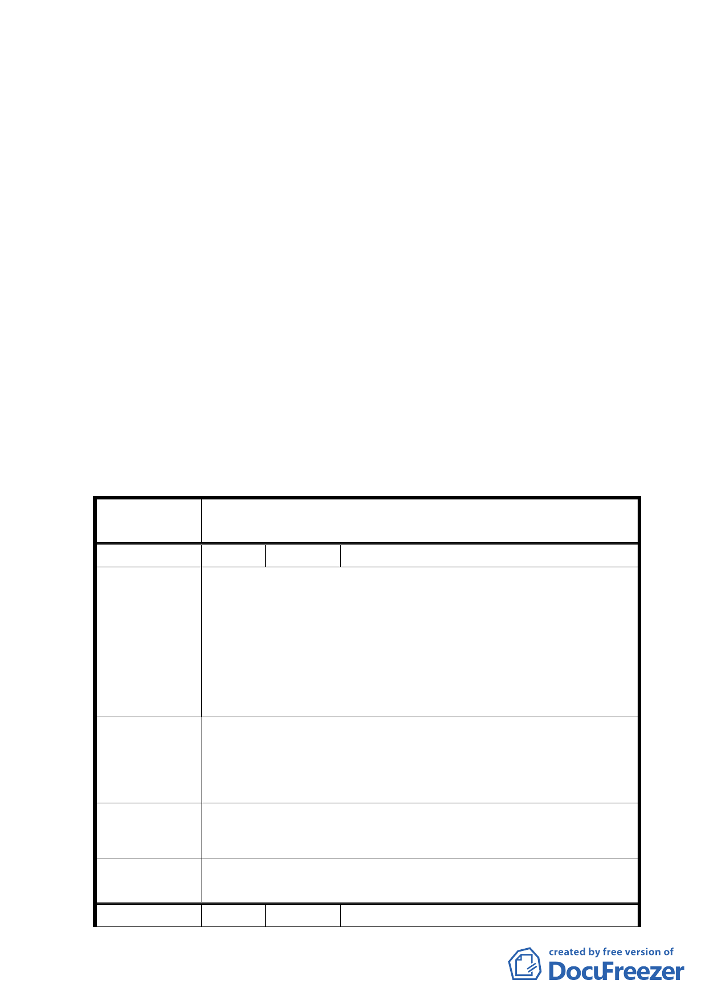

（五）請市府相關單位於現階段即應積極協調，促使一壽橋早
日恢復車行，以利解決本區交通負荷之問題。
（六）未來本區填土工程進行時應協調選定適當路線，並減低
對附近居民與環境之衝擊。
（七）全案請發展局彙整歷次專案小組審查會議結論，並研提
計畫案修正前後對照表與補充說明到會後，即續送委員
會（大會）審議。
十二、案經市府都市發展局以 94 年 12 月 9 日北市都規字第
09435276800 號函送計畫修正對照表及修正後計畫書到
會，續送委員會（大會）審議。
決議：
一、本案依專案小組審查結論暨發展局研提修正後計畫內容修正
通過。
二、公民或團體所提意見審決如後附綜理表。
臺北市都市計畫委員會公民或團體所提意見綜理表
案 名 變更臺北市文山區景美溪左岸老泉里附近地區主要計畫案
編 號 １ 陳情人 朱楊淑蘭、楊水源、楊紅綢、高楊玷
一、土地標示：文山區老泉段四小段一七八、一七八之一、
一七八之二、一七九、一七九之一地號。
二、上述五筆地號之土地劃入保護區已逾三十七年，地主蒙
陳情理由
受巨大損失。
三、土地坡度皆在百分之三十度以下。
四、本土地若能劃入本次變更計畫內，更能發揮最大效用，
促進經濟發展。
擴大本計畫範圍（詳如附圖檢附現場照片四張）：
建議辦法
一、橙色部份：擬請擴大之區域。
二、綠色部份：現有道路。
三、桃紅色部份：東山中學校地。
專案小組
審查結論
所提建議位置非本案計畫範圍，錄請市府另行檢討。
委員會決
議
同專案小組審查結論。
編 號 ２ 陳情人 陳再炯
七